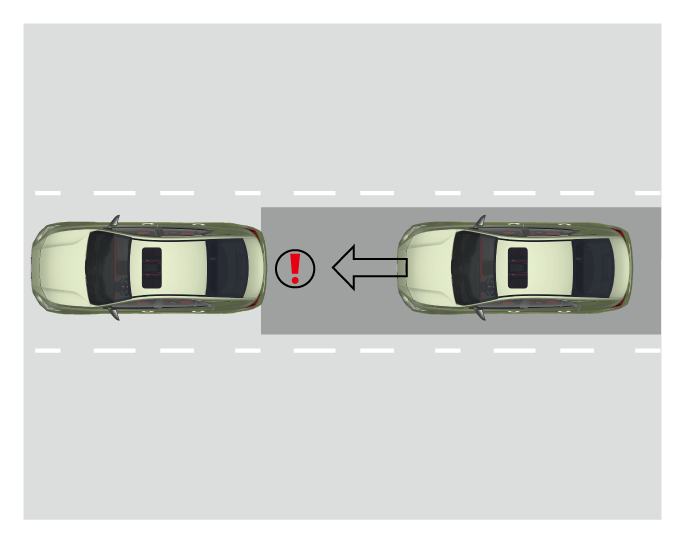

后车迫近辅助功能通过安装在车辆后部的盲区雷达实时监测车辆正后方目标，当驾驶员驾驶车辆在道路上正常行驶，后方本车道有目标快速接近时，系统发出报警信息，并向后方车辆发出追尾警告信号。
6.4.12 后车迫近辅助系统*

注意+
后车迫近辅助功能仅是辅助功能，不能代替驾驶员监控外界交通状况，驾驶员应时刻警惕周围环境。
开启和关闭
整车电源在“ON”挡位时，通过音响系统“设置→ADiGO智能驾驶→ADiGO主动安全”界面，短按“后车迫近辅助”右侧 软按键设置开启/关闭。
软按键设置开启/关闭。
提示+
系统具有开关状态记忆功能，车辆启动后，系统状态将与上次车辆电源关闭时的状态相同。
报警方式
后车迫近辅助功能通过主动激活双闪灯快速闪烁，对后方快速接近的车辆进行提示。
工作条件
功能激活需要满足以下条件：
–车辆启动且处于非倒车挡。
–功能开关处于开启状态，且功能无故障。
当雷达监测到本车道后方出现车辆，且接近速度较大时，此时功能会激活提示后车驾驶员减小追尾风险。
注意+
–该功能不能透过其它车辆或障碍物探测到其后的物体。
–当后方车辆运动过快时，该功能可能无法及时发出报警。
–当驾驶员已经打开危险警告开关时，该功能不会触发报警。
错误警报
探测区域内无车辆时，系统也可能发出警报，以下情况可能会发生错误警报：
–处于停车场中。
–处于不平路面时。
–建筑区域。
–灌木和树木。
注意+
错误警报为暂时性的，可自动更正。
— 页面到底了 —